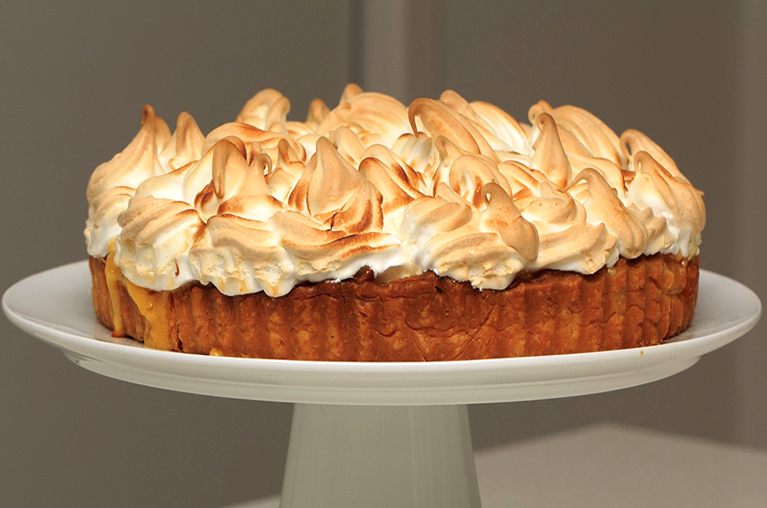

| TABLA NUTRICIONAL | |||
| Composición | Por 100 g | Por Porción | |
|---|---|---|---|
| Carbohidratos | 5 g | 7 g | |
| Proteínas | 3,8 g | 5,3 g | |
RECETA DE LA SEMANA

Descripción
Tarta de limón (Lemón Pie) con merengue italiano
Ingredientes para la masa
- 100g de manteca blanda
- 1 yema
- 2 cucharadas de azúcar
- 2 cucharadas de agua fría
- 1 cucharada de vinagre
- 1 taza de harina
Ingredientes para el relleno
- 1 taza de agua
- 1 taza de azúcar
- 2/3 de taza de jugo de limón
- 2 cucharadas de fécula de maíz
- 4 yemas
- 4 cucharadas de manteca
- Ralladura de 1 limón
Ingredientes para el merengue
- 4 claras
- 200g de azúcar
Procedimiento
- La masa. Aplastar con el tenedor la manteca, la yema, el azúcar, el agua y el vinagre, hasta obtener una pasta. Incorporar de a poco la harina hasta que se forme un bollo.
- Aplastar ligeramente la masa con el palote enharinado, colocarla en una tartera desarmable enmantecada y enharinada y terminar de estirarla aplastando con los dedos enharinados. Pincharla con un tenedor. Recortar los bordes en forma prolija.
- Cocinar la tarta en horno caliente hasta que la masa esté sequita y suavemente dorada. Retirar del horno y dejar enfriar.
- El relleno. Poner en una cacerola el agua, el azúcar, el jugo de limón y la fécula. Mezclar con batidor de alambre. Llevar al fuego y cocinar mezclando continuamente hasta que la preparación hierva y espese. Retirar del fuego y verter sobre las yemas previamente batidas.
- Volver a poner la mezcla en la cacerola y llevar nuevamente al fuego, revolviendo siempre hasta que espese un poco más. Retirar la mezcla del fuego, tamizarla en un bol y, mientras esté caliente, mezclar la manteca y la ralladura.
- Una vez tibia la crema, rellenar la tarta precocida, alisando la superficie.
- El merengue. Realizar un almíbar con el azúcar y una cucharada de agua. Batir las claras hasta espumarlas. Cuando el almíbar llegue los 118°, verterlo en fomra de hilo sobre las claras, mientras se baten. Continuar el batido hasta el bowl se sienta frío.
- Estacionar la tarta en la heladera hasta que la crema esté bien firme. Retirar la tarta de la heladera y cubrirla totalmente con el merengue. Para que quede "doradita", meterla en el horno un minuto. Enfriar.